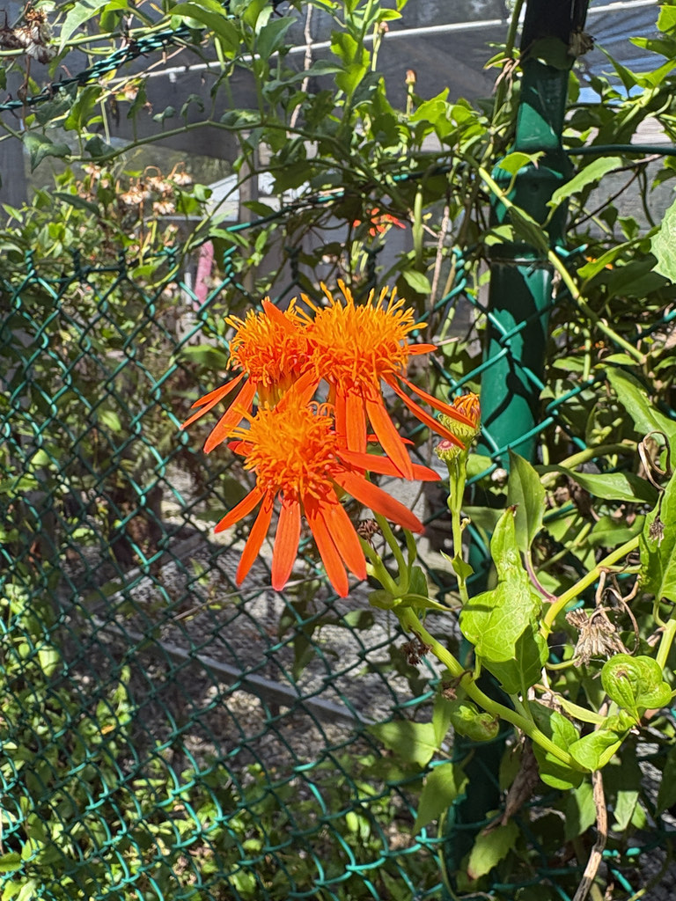

- Belongs to the daisy family — Asteraceae — which makes those orange flowers composites: each apparent bloom is actually dozens of tiny individual flowers packed together.
- In Florida it tends to flower most heavily in autumn and winter, which aligns it with Monarch butterfly migration down the peninsula. Reliable reports of 50 or more butterflies on a single vine at peak migration.
- Grows up to 33 feet. At Palma Sola it has claimed the nursery fence and the top of the greenhouse structure — most of the plant is above eye level, which is easy to miss in a park where most visitors look down or straight ahead.
- To get a good look at it you have to leave the main path, pass the banana trees, and go looking. It rewards the effort.
Non-native. Native to Mexico, Central America, and northern South America. A member of Asteraceae — the daisy family — making it a relative of sunflowers, zinnias, and the park's own Beach Sunflower and Firewheel. Formerly sold as Senecio confusus and still widely listed under that name in nurseries.
- The Mexican Flame Vine has had an unusually complicated taxonomic history — sold for decades as Senecio confusus, then moved to Pseudogynoxys, a change that has been slow to reach nursery labels. If you search for it online you will find it under both names.
- The flowers are composite blooms — what looks like a single orange daisy is actually a tightly packed cluster of many tiny individual flowers, each producing its own pollen and nectar. This is the defining structure of the entire Asteraceae family.
- In Florida the vine tends to flower most in autumn and winter rather than summer, which lines it up directly with the Monarch butterfly migration moving south along the peninsula. Observers have recorded upwards of 50 butterflies at a time on a vine in full bloom during peak migration.
- At the park, this vine is not on the main path. It has grown up over the nursery fence and across the top of the greenhouse structure, which means most of the plant lives above eye level — easy to walk past without noticing. Getting a proper look requires a small detour past the banana trees. When it is in full bloom, the detour is worth making.
A significant nectar source for butterflies, particularly Monarchs and Queens during fall migration. The autumn-winter bloom period in Florida is well-timed for migrating populations moving south through the peninsula.
Bees and birds also visit the flowers regularly. The daisy structure of the composite blooms makes the nectar accessible to a wide range of insects, not just specialists.
Seed heads resemble small dandelion puffs and are wind-dispersed — the vine spreads readily, which is part of why it has naturalized on disturbed sites in Florida and become a concern in some tropical regions. The ecological value and the spread risk are both real.
Orange to orange-red composite daisy-like blooms about 1 inch across, in clusters at branch tips. Each apparent flower is actually dozens of tiny florets. Blooms nearly year-round in Florida, with heaviest flowering in autumn and winter. Flowers age from orange to red as they mature.
Small ribbed seed heads with persistent bristles forming dandelion-like puffs. Wind-dispersed and viable for a short window after release. Stem cuttings also root readily.
Thick, deep green, arrowhead-shaped, 2 to 4 inches long and slightly fleshy. Evergreen.
Fast-growing twining climber, slightly woody with age. Reaches 16 to 33 feet. Climbs fences, trellises, and structures quickly and densely.
At the park, look up — the vine lives on top of the nursery fence and greenhouse structure, not at eye level. The orange flower clusters are visible from a distance when in bloom. Follow the path past the banana trees to get underneath it.
Do not eat any part of this plant. It contains pyrrolizidine alkaloids — the same liver-toxic compounds found in many former Senecio relatives. Wear gloves when pruning or handling it in quantity.
For dogs, casual contact is unlikely to cause trouble, but the alkaloids are toxic if eaten in quantity, so keep pets away from fallen plant material and discourage chewing.


- © Aiden Gitt (CC-BY-NC), via iNaturalist
- © jsea (CC-BY-NC), via iNaturalist
- © Randall Carter (CC-BY-NC), via iNaturalist
- © Rhonda Olschefskie (CC-BY-NC), via iNaturalist